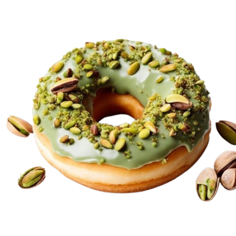

Strawberry
Sweet and fruity

Chocolate
Intensely chocolatey

Jam
filled with sweet, fruity jam

Pistachio
Fried just tastes better

strawberry
Delisious and sweet

Oreo
Testy chocolate

Blueberry
Juicy Delight

Hot Chocolate
Cozy Classic